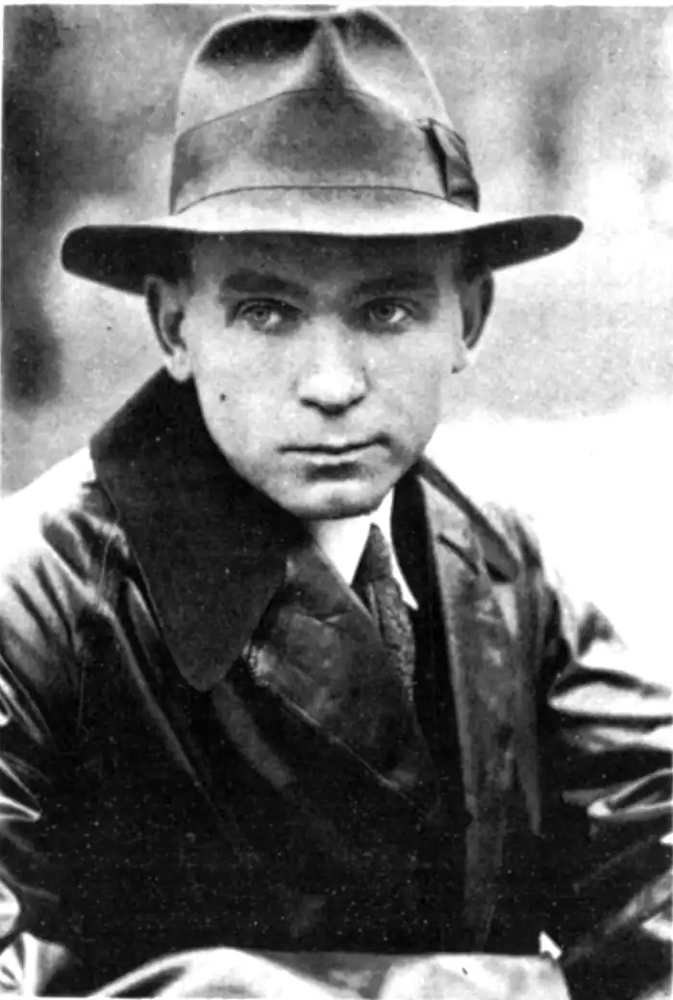
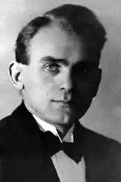
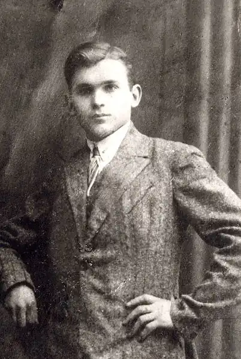
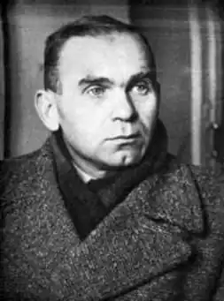
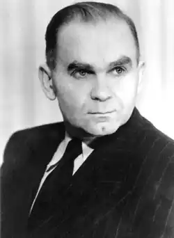

Улас Самчук
(1905 — 1987)
Улас Олексійович Самчук — український прозаїк. Народився 20 лютого 1905р. в селі Дермань на Рівненщині. Навчався в Бреславському (нині Вроцлавському) університеті. Пізніше переїхав до Чехо-Словаччини, де навчався в Українському вільному університеті в Празі. Перше оповідання У. Самчука "На старих стежках" видруковане у варшавському часописі "Наша бесіда" 1926 року, а з кінця 20-х років він вже активно співпрацює з українськими літературно-художніми часописами. Трагедія голодомору 1932 — 1933 pp. в Україні стала тематичною основою його роману "Марія" (1933). В 1932p. написаний також політично загострений роман "Кулак", в якому автор показує абсурдність насильницької колективізації. Одним з визначних досягнень української літератури стала тетралогія У. Самчука "Волинь" (1928 — 1937) — розлоге епічне полотно, яке зображує буття українського селянина в добу воєн та революцій. Головний персонаж твору, Володька Добенко, через усі життєві катаклізми проносить віру в незнищенність народу. Героїчна історія Закарпатської України відображена в патріотичному романі "Гори говорять" (1936). У роки німецької окупації письменник продовжує культурно-просвітницьку роботу на посаді редактора газети "Волинь". Проте вже 1943p. він був заарештований нацистами за свої патріотичні переконання. В післявоєнний час письменник переїздить до Канади, де публікує перший том трилогії "Ост" — "Морозів хутір" (1948) (другий роман — "Темнота" побачив світ 1957 року, третій "Втеча від себе" — 1982р.). У. Самчук відомий також як автор спогадів: "На білому коні" (1955), "Чого не горить вогонь" (1959), "На коні вороному" (1975), "Плянета Ді-Пі" (1979). Помер 9 липня 1987р. в Канаді.